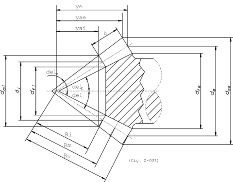
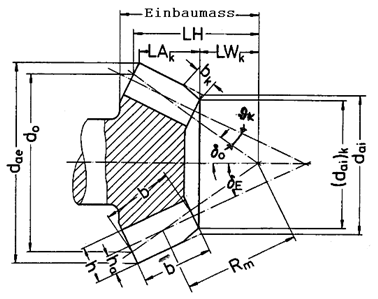

|
|
|


齿顶角和根锥角
创建锥齿轮图纸所需的所有必要数据都可以根据齿顶角和齿根角计算得出。这些数据包括外侧和内侧锥体上的齿顶圆直径和有效齿根圆直径，以及外锥和内锥直径上的齿厚 （参见图 16.3） 和 （参见图 16.4）。对于具有螺旋齿的锥齿轮，齿顶角和齿根角使用所选方法 [ISO 23509 或 DIN 3971] 计算。

图 16.3：锥齿轮尺寸标注

图 16.4：按 Klingelnberg 方法对锥齿轮进行尺寸标注
Addendum angle and root angle
All the necessary data required to create the bevel gear drawing can be calculated from the addendum angle and dedendum angle. These are the tip and active root diameter on the outside and inside bevel, and the tooth thickness on the external and internal cone diameter (see Figure 16.3) and (see Figure 16.4). In the case of bevel gears with spiral teeth, the addendum angle and dedendum angle are calculated using the selected method [ISO 23509 or DIN 3971].
Figure 16.3: Dimensioning a bevel gear
Figure 16.4: Dimensioning a bevel gear according to Klingelnberg